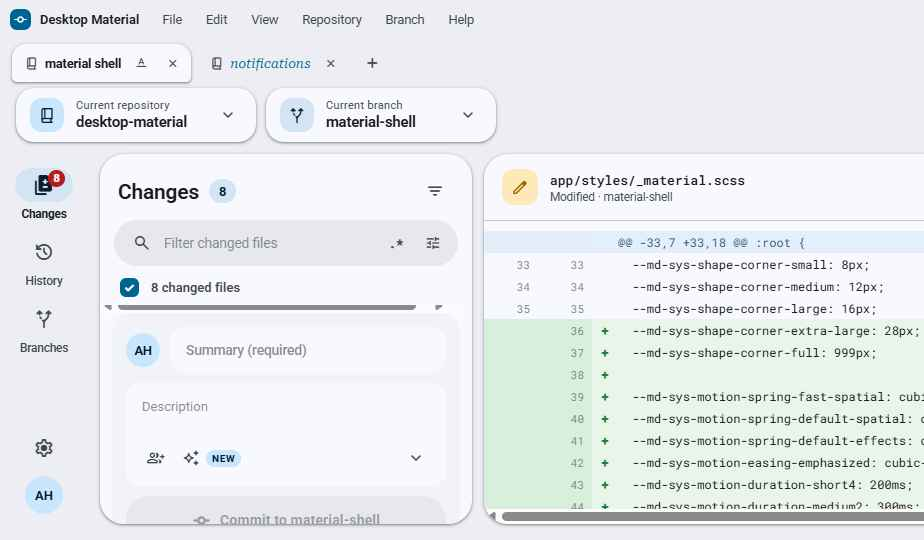
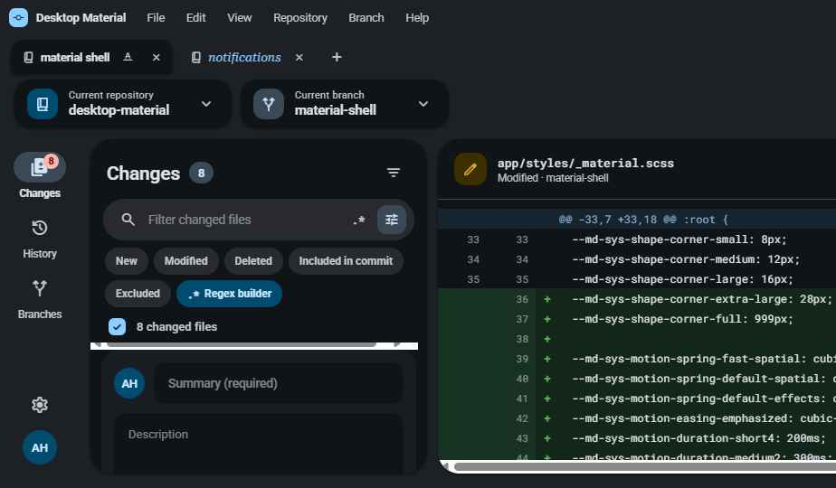
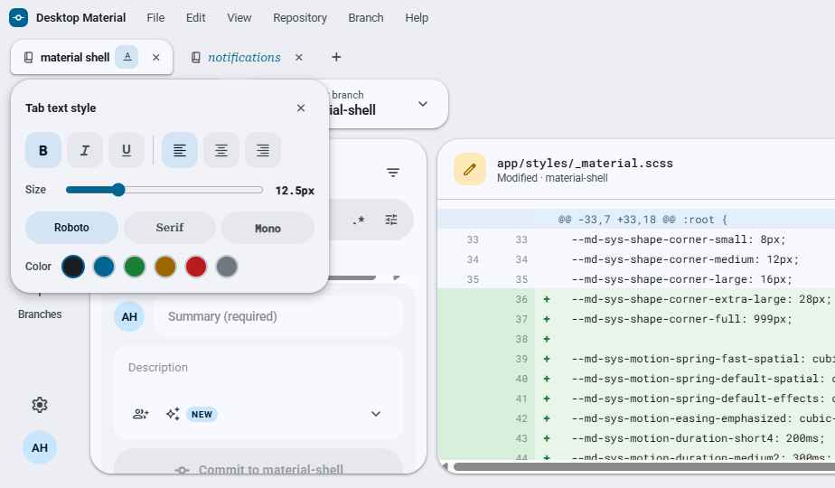
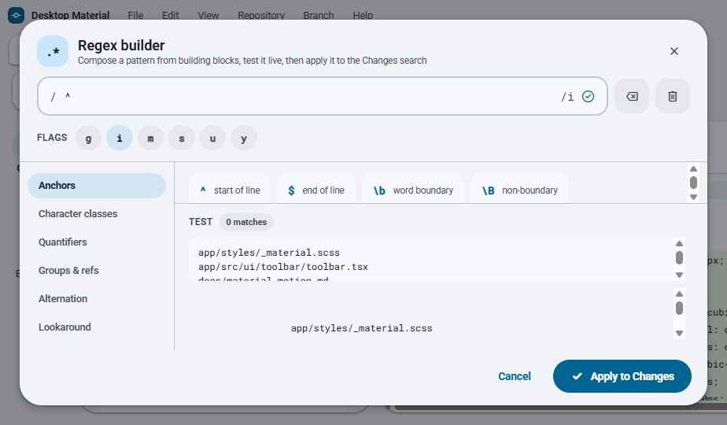
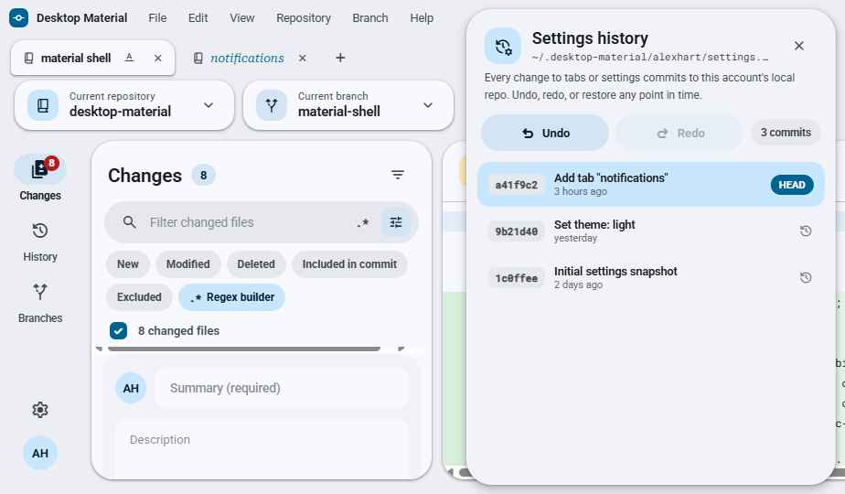
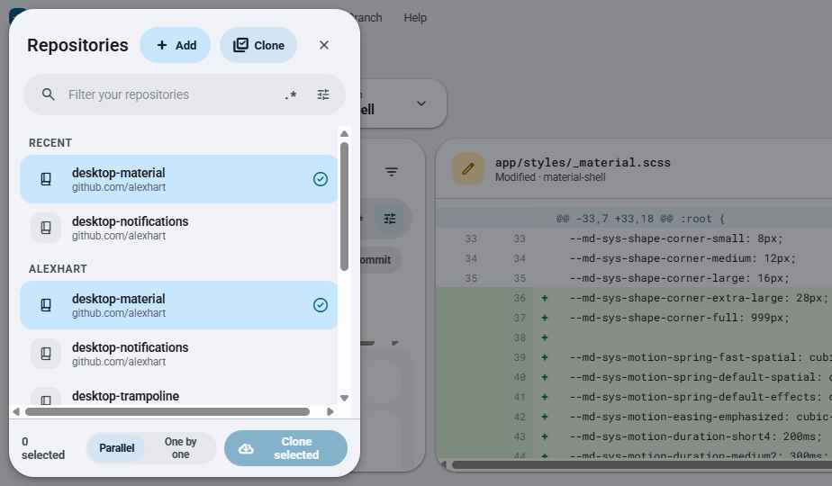

M3 Expressive shell
Animated light/dark theming, soft elevation, pill controls, and dynamic UI scaling from 50–200% with auto-fit.
Desktop Material is an independent M3 Expressive remake of GitHub Desktop — browser-like repo tabs, real multi-account, versioned settings, and automation, wrapped in an animated light/dark shell.

Everything GitHub Desktop does, plus the features power users keep asking for — reimagined around Material Design 3.
Animated light/dark theming, soft elevation, pill controls, and dynamic UI scaling from 50–200% with auto-fit.
Tabs bound per-account to repositories, with inline rename and per-tab title styling — bold, italic, size, colour, font, alignment.
Multiple identities per host, each with its own tabs, repos, and settings. Self-hosted GitLab and Bitbucket sign-in included.
Every settings and tab change auto-commits to a local git repo, with a full undo/redo history manager — restore any prior state.
Checkbox-select many repos, filter by org chips, clone in parallel or one-by-one, and export/import repo lists as URLs.
Every search bar gets filter chips, a regex toggle, and a full builder — anchors, classes, quantifiers, groups, lookaround, live tester.
One-click commit & push with a Copilot-written message, scheduled auto commit/push, and auto pull — global default plus per-repo override.
Fold every branch and worktree into the default branch with Copilot conflict resolution, then delete merged branches and push.
Browse workflow runs, filter by status/branch/event, re-run or re-run-failed, inspect job steps, and read logs in-app.
A bell and side panel backed by its own local git repo — unread badges, mark read/unread, and delete.
Browse and clone full org repo lists, and publish straight into an organization.
Drive the app from AI agents over a bundled MCP server, with a local HTTP/CLI fallback. Non-modal, drag-by-header dialogs throughout.
Click any image to open it full size.





Clone the repo, follow the wiki, and try the M3 shell for yourself. Contributions welcome — it's early and moving fast.